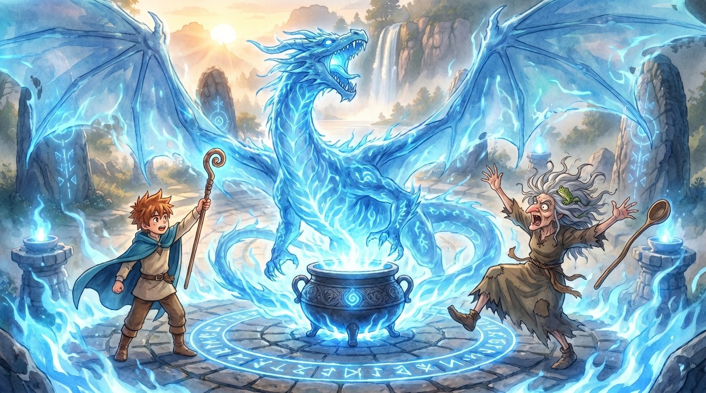
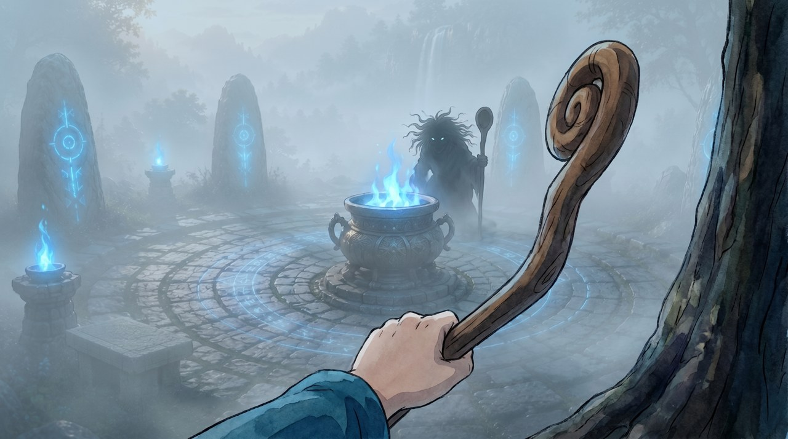
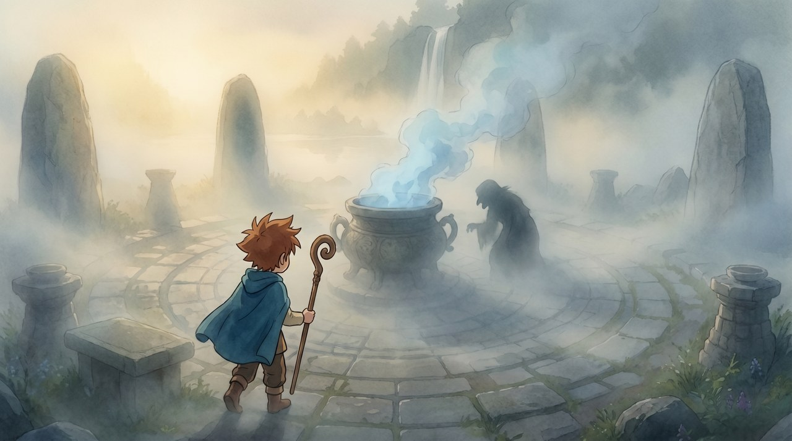
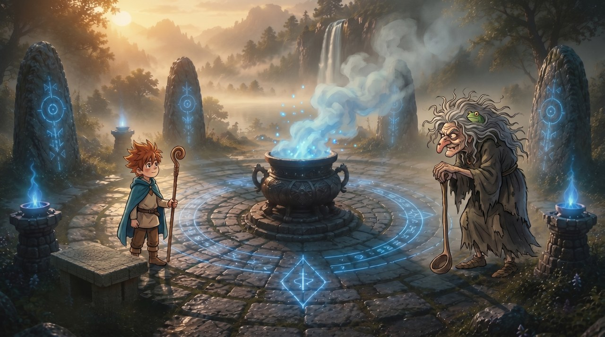
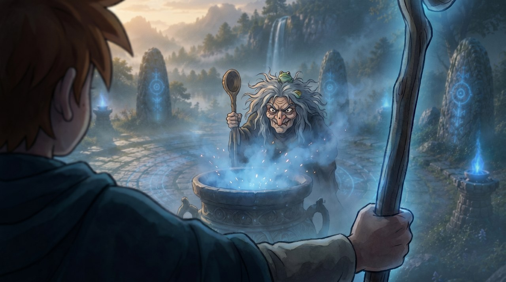
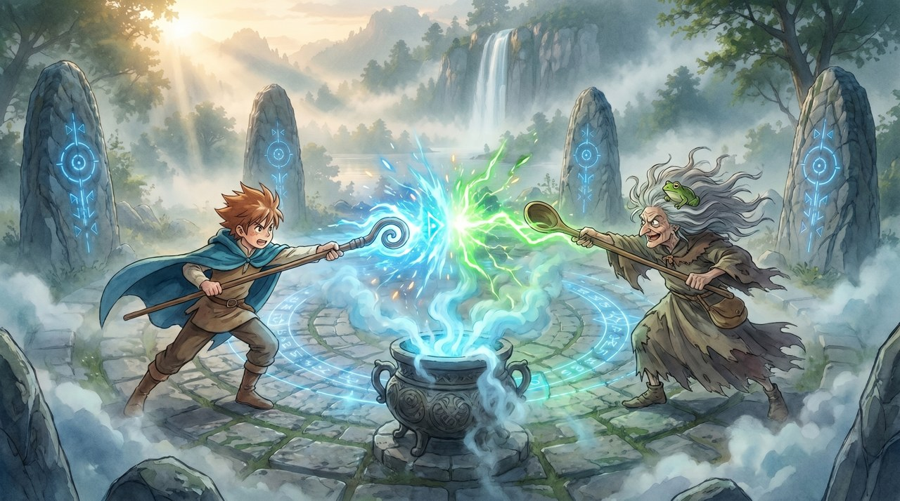
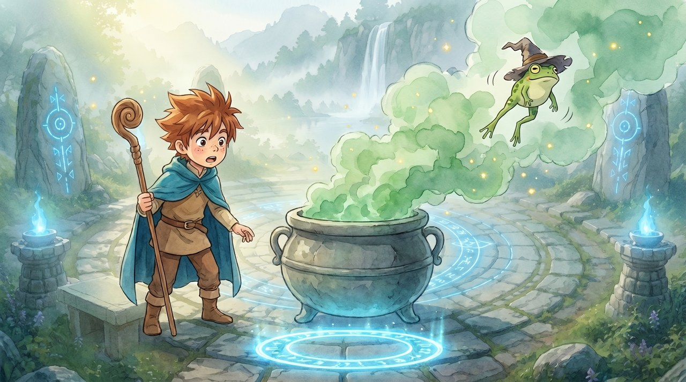
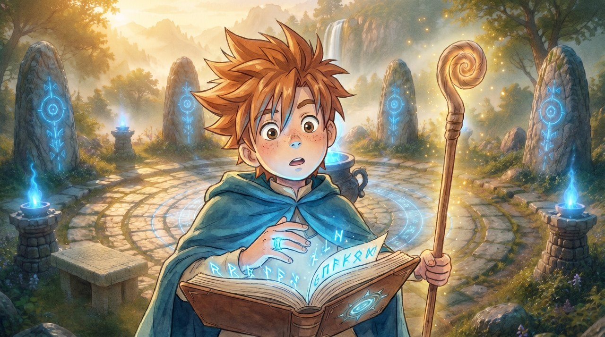

In de vroege ochtendschemering loopt Finn de dichte mist in — vanuit zijn eigen ogen zie je zijn staf en de vage gedaante van een heks bij de ketel opdoemen. Het is een oude, lelijke heks: wilde grijze haren, een kromme neus, een kikkertje in haar haar, leunend op een grote houten pollepel als staf. Een tweegevecht van spreuken rond de blauw-rokende ketel in het midden van de cirkel, met het meer en de waterval in de mist erachter. Hij wint, de heks lost op in blauwgrijze rook, de kikker fladdert weg en laat een ring achter, waarmee Finn aan de stenen tafel met een zwarte veer de drakenspreuk in zijn boek schrijft. Filmisch en sfeervol, handgeschilderd in Ghibli-stijl, vanuit wisselende camerahoeken.


Echt vanuit Finns ogen, half verscholen achter een boomstam: zijn blote hand om zijn gekrulde staf. De runencirkel in de vallei — het meer en de waterval erachter zijn nauwelijks te zien door de dichte mist. Áchter de blauw-vlammende ketel staat de heks als een donker silhouet, leunend op haar pollepel-staf. Onheilspellend en stil.

Wijd: Finn loopt voorzichtig de mistige runencirkel in (van achteren gezien, staf in de hand). Verderop, half opgeslokt door de nevel bij de blauw-rokende ketel, staat de vage donkere gedaante — gebogen en onheilspellend.

Schuine, dynamische compositie bij dageraad: Finn deinst geschrokken terug en zet zich schrap met zijn staf, terwijl de heks zich grommend en met klauwende hand naar voren werpt. Blauwe bliksem knettert uit de ketel; vonken en spanning in de lucht.

Van vlak achter Finns schouder: zijn staf laait op met wervelende blauwe magie en runen, en daar tegenover gromt de heks je recht aan, leunend op haar pollepel — kikker in haar haar. Blauwe rook en vonken alom; meer en waterval in de ochtendmist.

Beiden duiken naar voren en casten: Finns blauwe magie botst boven de ketel op het knetterende tegenvuur van de heks in een verblindende flits — schokgolf, wegspattende vonken, haren en mantels die wapperen.
Finn heft zijn staf hoog en een kolossale blauwe DRAKENGEEST met gespreide vleugels buldert uit de ketel op de heks af; zij krijst en deinst doodsbang achteruit, haar pollepel valt. De hele cirkel laait blauw op.

De heks lost op in een wolk blauwgrijze rook en uit de rook fladdert een kleine groene KIKKER MET VLEUGELS (geen hoed) de ochtendlucht in; haar pollepel klettert neer. Voor de ketel ligt de gloeiende blauwe ring op de kale stenen.

Aan de stenen tafel linksonder in de cirkel buigt Finn zich over zijn boek en schrijft met een zwarte veer; de ring gloeit om zijn vinger en de drakenspreuk verschijnt in oplichtende blauwe runen — zijn gezicht blauw verlicht, met het gouden ochtendlicht erachter.
valley-magic als vaste referenties, zodat held én locatie consistent blijven.Ghibli-scènes · gegenereerd in Higgsfield (Nano Banana Pro, 2k) · referentiepagina (niet voor de site).